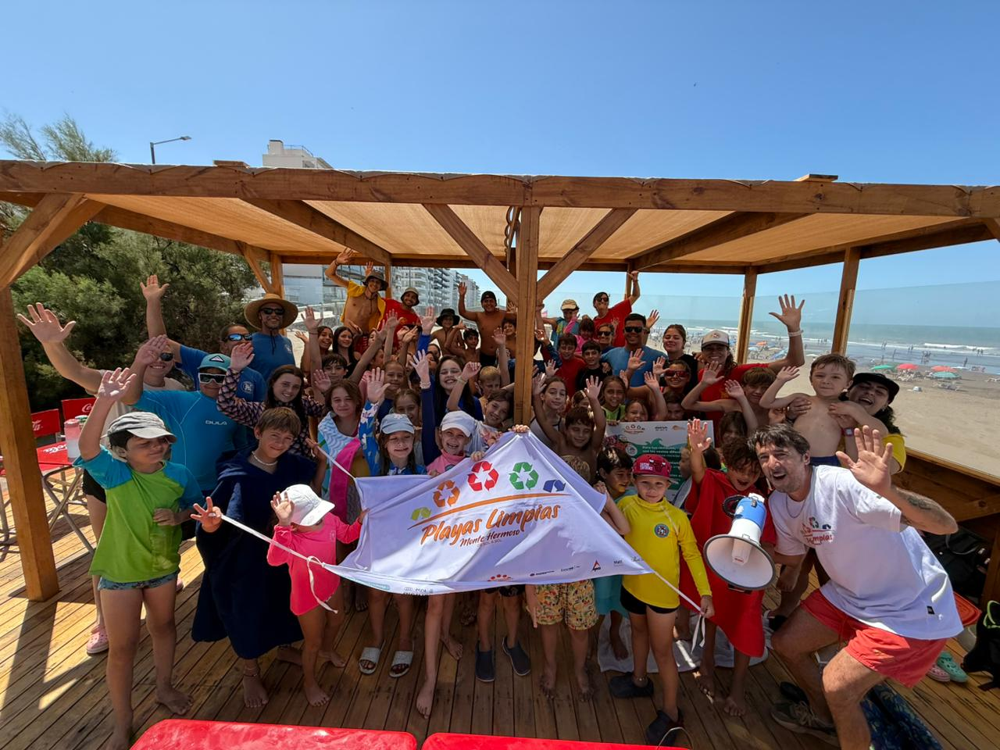

01 · Explorar la costa
Observar el mar, las playas, los médanos, la biodiversidad y los procesos que transforman el paisaje costero.
Proyecto socioambiental · En desarrollo
Conocer nuestro ambiente. Comprender sus cambios. Participar en su cuidado.
Una propuesta de Escuela de Mar Monte Hermoso para promover la educación socioambiental y el protagonismo de las nuevas generaciones en el cuidado del ambiente costero.
Conocé la propuesta ↓¿De qué se trata?
Guardianes del Ambiente es una iniciativa en desarrollo que busca fortalecer la participación de niñas, niños y adolescentes en el conocimiento, la valoración y la protección del ambiente costero.
Queremos conectar la exploración, la educación y el trabajo comunitario con acciones concretas, construidas junto a especialistas, familias e instituciones de Monte Hermoso.
No se trata solamente de hablar del ambiente: buscamos crear oportunidades para observar, preguntar, investigar y participar.

Cuatro líneas de trabajo propuestas
Observar el mar, las playas, los médanos, la biodiversidad y los procesos que transforman el paisaje costero.
Abordar, de acuerdo con cada edad, la crisis climática, los residuos, la erosión costera y el cuidado de los ecosistemas.
Diseñar iniciativas colectivas de cuidado ambiental y participación juvenil, con objetivos concretos y seguimiento.
Vincular a jóvenes, familias, escuelas, organizaciones y especialistas para fortalecer el trabajo comunitario.
Nuestro enfoque
La educación socioambiental puede ayudarnos a comprender los cambios de nuestro entorno y a construir respuestas colectivas.
Queremos promover oportunidades de participación equitativa y liderazgo juvenil. Así entendemos la resiliencia climática comunitaria: como una capacidad que se construye con conocimientos, vínculos y acciones compartidas.
Proyecto en desarrollo
Para poner en marcha Guardianes del Ambiente, estamos trabajando en definir actividades, responsables, alianzas técnicas, recursos y formas de evaluar los resultados. Las acciones futuras se comunicarán una vez confirmadas.
Articulación con especialistas, instituciones educativas y equipos vinculados al ambiente costero.
Diseño de espacios donde niñas, niños y adolescentes puedan aportar ideas y desarrollar iniciativas.
Búsqueda de cooperación y financiamiento para actividades, materiales y continuidad.
Guardianes del Ambiente es una propuesta en desarrollo. Las actividades mencionadas son líneas de trabajo previstas, no acciones actualmente confirmadas.
Sumemos esfuerzos
¿Representás a una escuela, universidad, organización o institución interesada en colaborar?
Conversemos → Volver a proyectos →